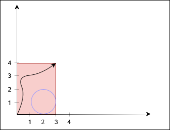
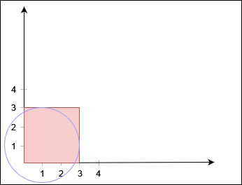
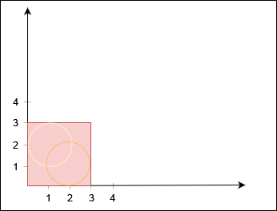
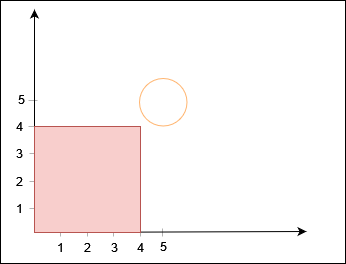

| Category | Difficulty | Likes | Dislikes |
|---|---|---|---|
| Algorithms | Hard | 119 | 38 |
array | math | depth-first-search | breadth-first-search | union-find | geometry
amazon
You are given two positive integers xCorner and yCorner, and a 2D array circles, where circles[i] = [xi, yi, ri] denotes a circle with center at (xi, yi) and radius ri.
There is a rectangle in the coordinate plane with its bottom left corner at the origin and top right corner at the coordinate (xCorner, yCorner). You need to check whether there is a path from the bottom left corner to the top right corner such that the entire path lies inside the rectangle, does not touch or lie inside any circle, and touches the rectangle only at the two corners.
Return true if such a path exists, and false otherwise.
Example 1:
Input: xCorner = 3, yCorner = 4, circles = [[2,1,1]]
Output: true
Explanation:

The black curve shows a possible path between (0, 0) and (3, 4).
Example 2:
Input: xCorner = 3, yCorner = 3, circles = [[1,1,2]]
Output: false
Explanation:

No path exists from (0, 0) to (3, 3).
Example 3:
Input: xCorner = 3, yCorner = 3, circles = [[2,1,1],[1,2,1]]
Output: false
Explanation:

No path exists from (0, 0) to (3, 3).
Example 4:
Input: xCorner = 4, yCorner = 4, circles = [[5,5,1]]
Output: true
Explanation:

Constraints:
3 <= xCorner, yCorner <= 1091 <= circles.length <= 1000circles[i].length == 31 <= xi, yi, ri <= 109